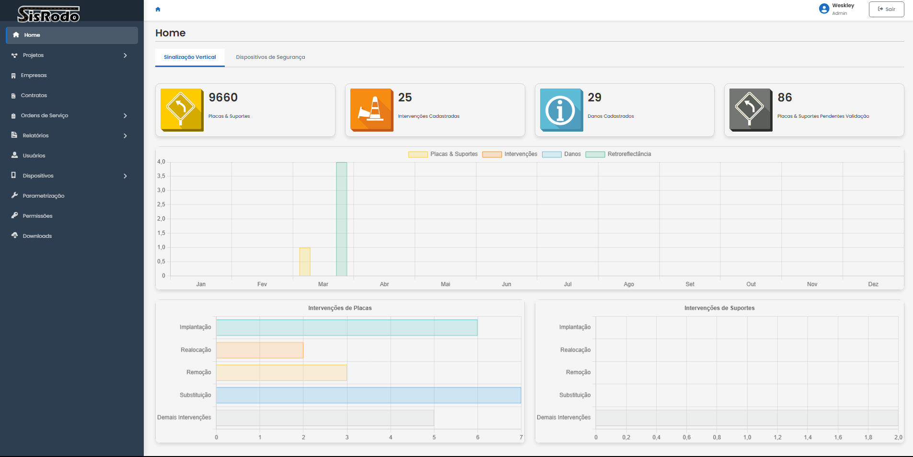
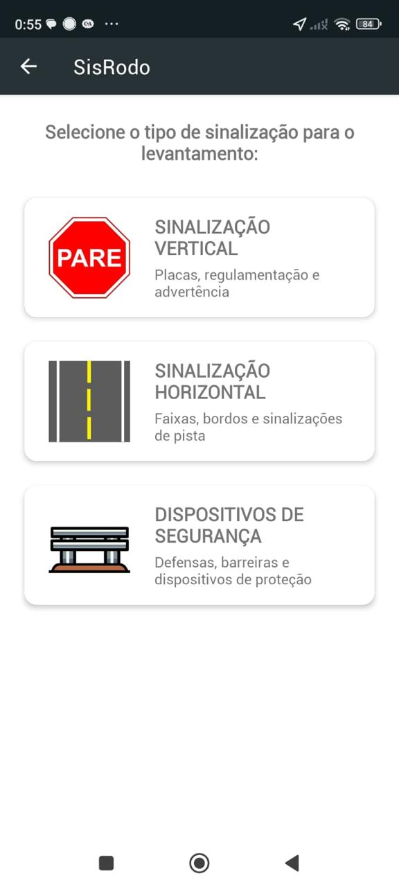
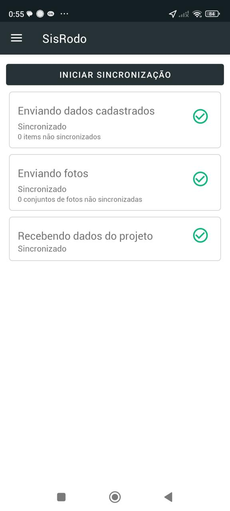
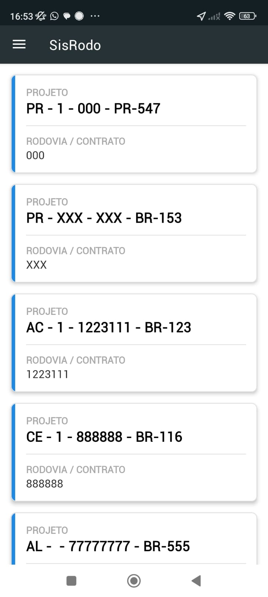
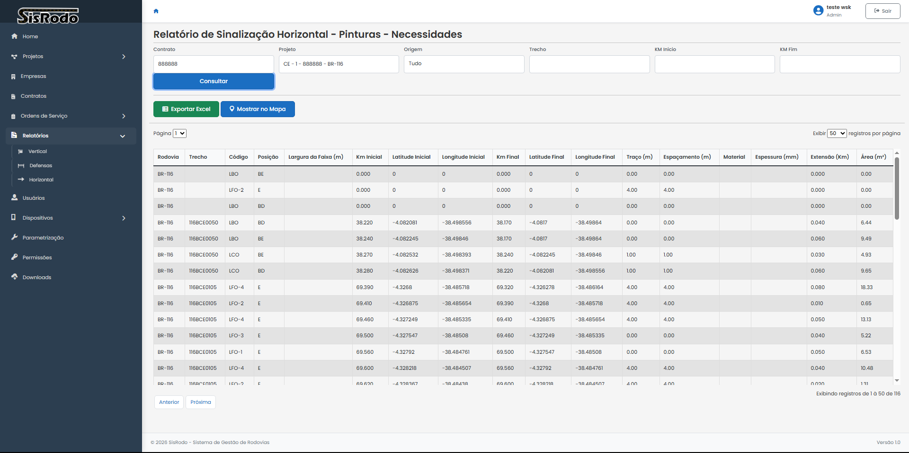
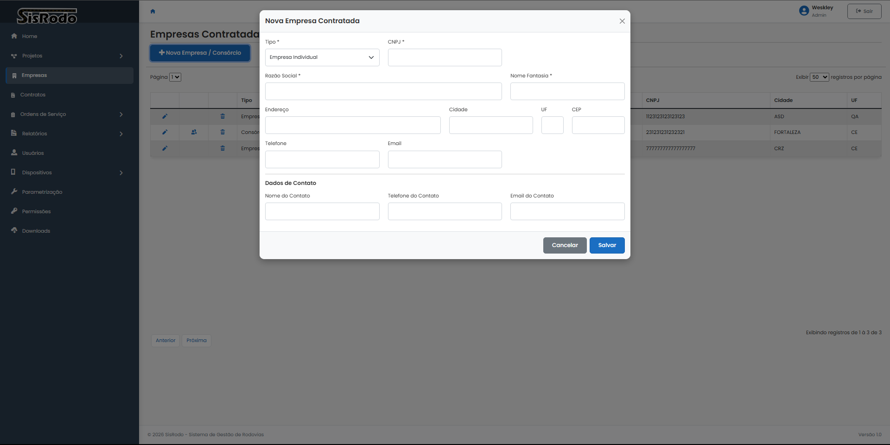

Sinalização Vertical
Gestão completa de placas, suportes e intervenções com histórico, fotos e georreferenciamento.
Plataforma completa para gestão de sinalização, dispositivos de segurança e operações em rodovias — com sincronização em tempo real entre equipes de campo e gestão central.



Do levantamento em campo à gestão de contratos, o SisRodo centraliza dados, processos e indicadores em um único ecossistema.
Gestão completa de placas, suportes e intervenções com histórico, fotos e georreferenciamento.
Controle de pinturas, faixas e demarcações com relatórios de necessidades e execução por trecho.
Defensas, barreiras e dispositivos de proteção com cadastro, inspeção e manutenção integrados.
Localização precisa por KM, latitude e longitude com visualização em mapa interativo.
Dashboards com gráficos de intervenções, produtividade e status por projeto e contrato.
Permissões granulares, multi-empresa e auditoria para operações enterprise em escala.
O app SisRodo permite levantamentos, fotos e sincronização offline — garantindo que nenhum dado de campo se perca.



Visualize indicadores, exporte relatórios e acompanhe intervenções por rodovia, trecho e contrato — tudo em uma interface clara e profissional.
Automatize cadastros e elimine retrabalho entre campo e escritório.
Gerencie múltiplos contratos, empresas e projetos em uma única plataforma.
Histórico completo com fotos, coordenadas e rastreabilidade de intervenções.
Sincronização em tempo real reduz atrasos na tomada de decisão.
Atenda exigências contratuais com relatórios padronizados e auditáveis.